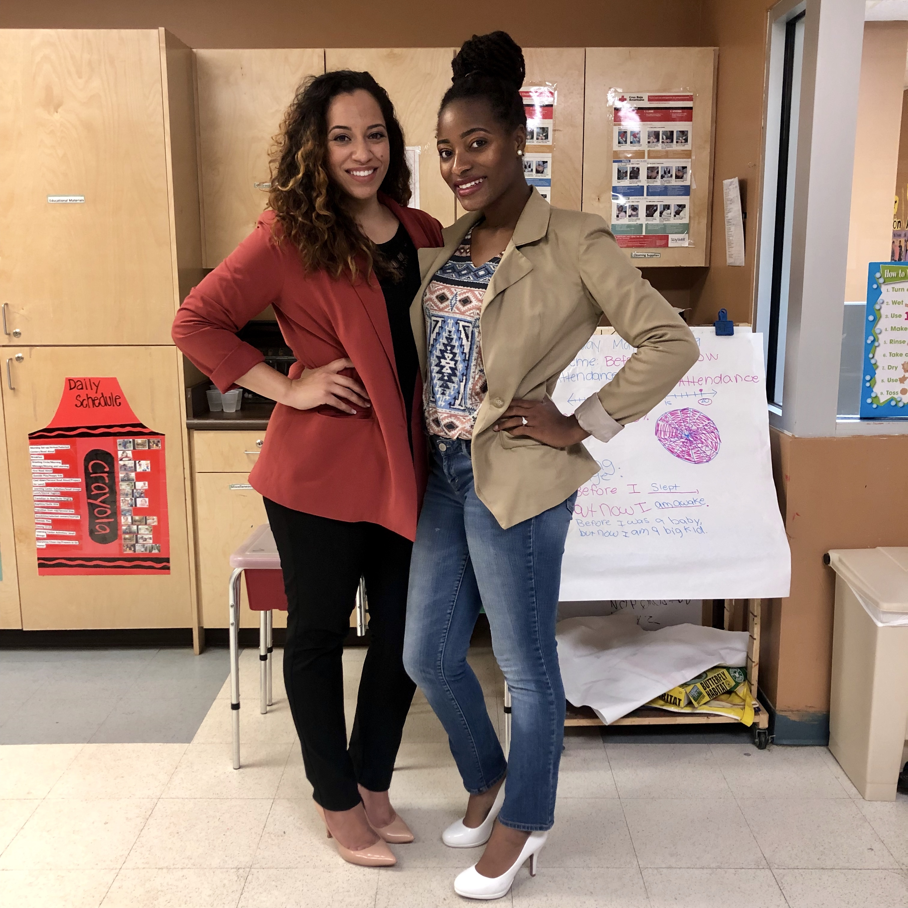

I am from Chicago, IL and have lived in the DFW for the last 4 years. In that time, taught pre-k (for 4 years), got married, bought a house, and had two children. I just quit teaching so that I could become a web developer!
I am from Chicago, IL and have lived in the DFW for the last 4 years. In that time, taught pre-k (for 4 years), got married, bought a house, and had two children. I just quit teaching so that I could become a web developer!
I was born and raised in Chicago, Illinois. Studied architecture and engineering at Lane Tech College Prep before attending the University of Illinois at Chicago to study Architecture. After two years, I changed majors and earned my B.A. in Sociology. I went on to become a full-time student affairs professoinal before earning my Master of Education degree in Instructional Leadership - Policy Studies.
While at the University of Illinois at Chicago, I managed building operations for the third largest student center in the nation. I enjoyed working with students so I went on to become an Assistant Program Director for the Center for Student Involvement. There, I managed budgets, planned events, and advised student organizations.
After I obtained my Master of Education degree, I moved to Dallas, Texas and became a teacher. I worked in a program that partners with Headstart Centers to ensure that children enter the school district prepared for kindergarten. I spent 4 years working for Dallas ISD as a Student Readiness Integration teacher. This past year was my best year yet but I quit teaching so that I could pursue this new career.
